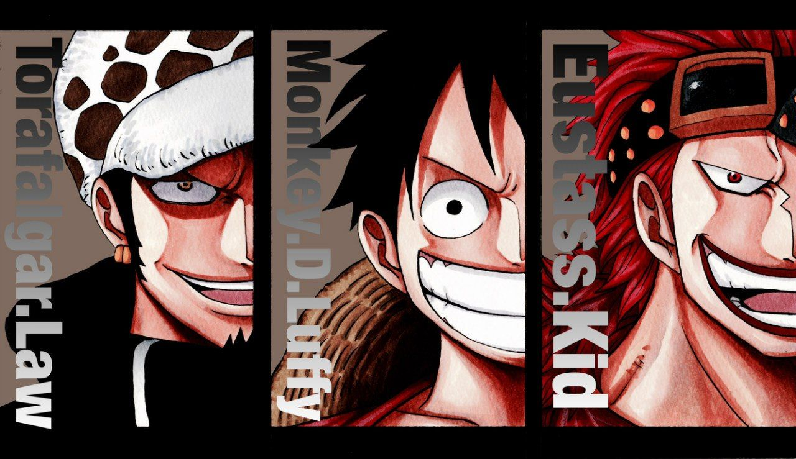

10 JUL 1520
1

O YONKOU KAIDOU E A YONKOU BIG MOM FORAM DERROTADOR!!!
AQUELES QUE CONSEGUIRAM DERRUBAR 2 DOS IMPERADORES QUE GOVERNARAM ESSE MARES
POR DÉCADAS FORAM OS 3 CAPITÂES DOS MARES:
MONKEY D. LUFFY
TRAFALGAR LAW
EUSTASS "CAPTAIN" KID
O GOVERNO OFERECEU UMA RECOMPENSA DE "3 BILHÔES DE BERRIES"!!! PARA CADA UM DELES.
SAIBA MAIS
MONKEY D. LUFFY
TRAFALGAR LAW
EUSTASS "CAPTAIN" KID
O GOVERNO OFERECEU UMA RECOMPENSA DE "3 BILHÔES DE BERRIES"!!! PARA CADA UM DELES.